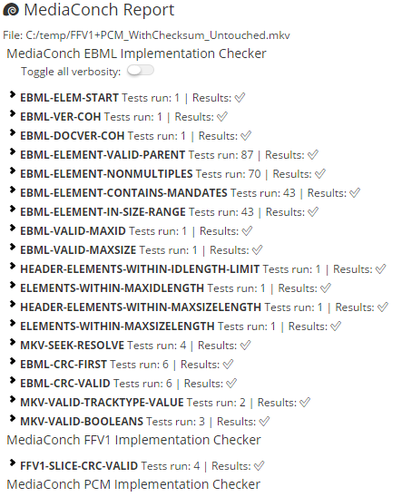
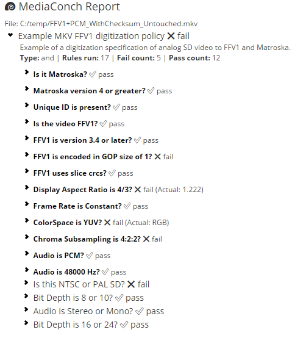

Implementation and policy checking
on FFV1, Matroska, LPCM (and more)
Guillaume Roques, MediaArea / SysnDev
Human Talks Montpellier - February 13, 2018
PREservation FORMAts for culture information/e-archives – is a Pre-Commercial Procurement (PCP) project co-funded by the European Commission, under its FP7-ICT Programme.
Development
MediaConch is a conformance checker
| Implementation report:  |
Policy report:  |
SysnDev : https://www.sysndev.fr
MediaArea: https://mediaarea.net, @MediaArea_net
MediaConch: https://mediaarea.net/MediaConch, @MediaConch
Guillaume Roques: guillaume@sysndev.fr
Slides: https://mediaarea.net/Events
License: CC BY